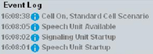

The "Audio Measurements" application with audio measurement option provides an audio signal for audio tests and analyzes the audio signal (for example microphone- and speaker tests for a mobile phone).
In addition, the audio board houses a speech codec board, that provides an interface to the signaling units of the R&S CMW. It decodes the signal delivered by a WCDMA signaling application or encodes an audio signal and delivers it to the WCDMA signaling application.
The speech codec allows the signaling application WCDMA to test the whole transmission chain of the signal. Particularly from analog input into the DUT's microphone through the RF to the output of the AF signal, and the reverse way. Here, the format of the AF signal is selectable between digital (SPDIF), and analog (AF connectors).
- Option R&S CMW-B400B "Audio Analyzer/Generator" is compatible to R&S CMW delivered after November 2011. It is also compatible to R&S CMW delivered before November 2011, that have been upgraded with R&S CMW-U5024.
- Option R&S CMW-U400 "Audio Analyzer/Generator" is compatible to R&S CMW delivered before November 2011, that have not been upgraded with R&S CMW-U5024.
- The audio board must be enhanced with a speech codec board (R&S CMW-B405A).
- Install the latest audio firmware/software package (Setup_CMW_AUDIO.exe) at your R&S CMW. This firmware application provides the routing of speech coder either to audio connectors or to internal audio generator and measurements.
The procedure outlined below is applicable to audio measurements with the "WCDMA signaling" application. For the detailed information, refer to the user manual of the audio measurements application.
To set up an audio connection, perform the following steps:
Connect the DUT with the audio connectors provided by the R&S CMW with an installed audio board. Select the connectors according to your test. For the test setups, refer to the user manual of the audio measurements application.
In the WCDMA signaling, select the "UE term. Connection" parameter "Voice".
Set the voice "Data Source" parameter "Speech".
Press the softkey "Go to..." (or "Audio Measurement" if preconfigured) to open the "Audio Measurements" application. See "Using the Shortcut Softkeys".
The "Audio Measurements" application selects a scenario automatically, for example, "External Analog Speech Analysis". In addition, the WCDMA signaling is coupled as a controlling master application, to which the speech codec is connected ("Controlled by" setting).
For a different test, change the scenario of audio measurements.
Configure coding rates for NB or WB AMR connection. See "Voice Connection Settings".
While the speech decoder detects the coding rate of the incoming speech packets and can adapt to it, the speech encoder uses only the configured coding rate. In case multiple coding rate M is selected, then the encoder is configured with coding rate A for NB AMR and coding rate G for WB AMR.
Configure any other settings as desired (as for a connection without the audio board) and switch on the cell signal.
Monitor the event log. After switching on the cell, the speech codec is active.

Turn on an internal audio generator of the audio measurements application.
Set up a UE originated or UE terminated voice connection.
Analyze the audio signal, for example, using the audio measurements application. The WCDMA TX measurements evaluate the different characteristics of the signal as well.